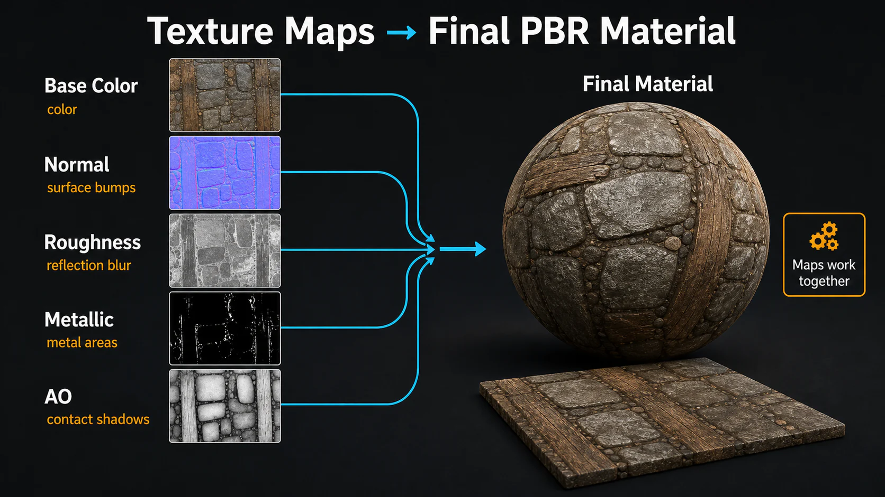
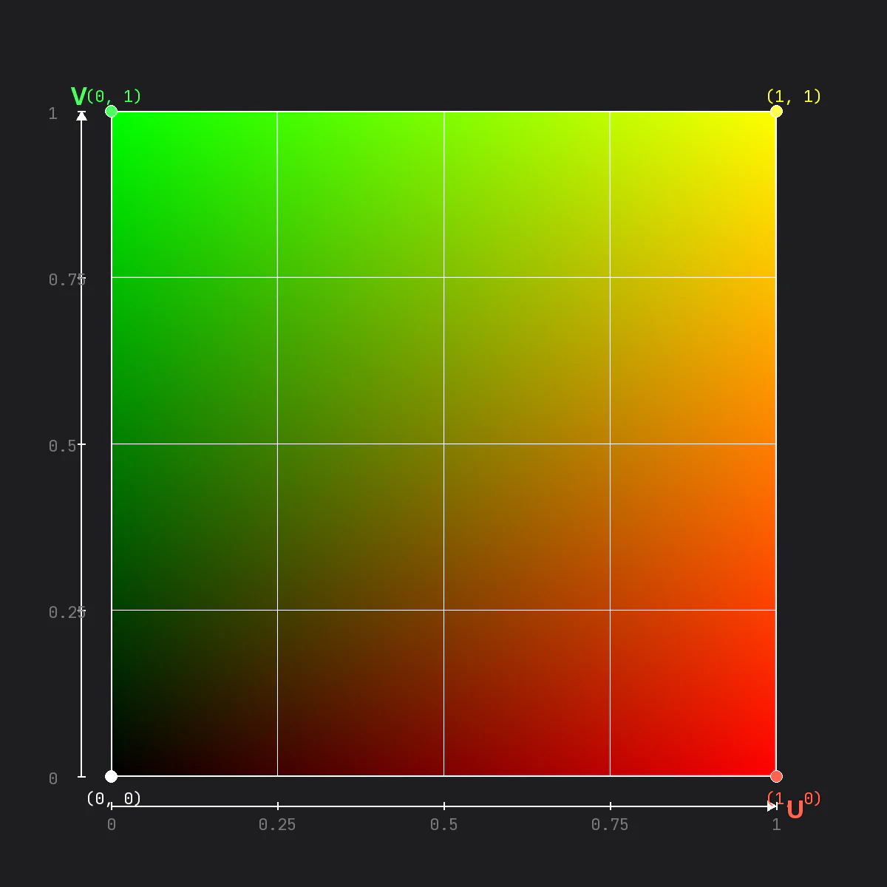
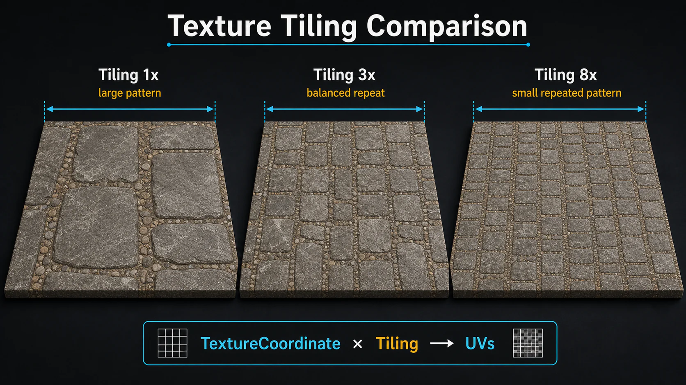

3주차 2교시 — 텍스처 + 파라미터 + 머테리얼 인스턴스 (학생용)
관련 문서
| 관계 | 문서 |
|---|---|
| 강의 계획서 | 강의계획서: Game Engine II |
| 1교시 교안 | 3주차 1교시: 머테리얼 기초와 PBR |
- 텍스처를 활용해 사실적인 머테리얼을 제작할 수 있다
- 파라미터화와 머테리얼 인스턴스의 개념을 이해하고 직접 만들 수 있다
- Fab 마켓플레이스에서 에셋을 다운로드하여 프로젝트에 활용할 수 있다
오늘은 1교시에서 색만 바꾸던 머테리얼을 한 단계 더 발전시킵니다. 텍스처 이미지를 사용해 훨씬 사실적인 표면을 만들고, 값을 파라미터화하여 실시간으로 조절하며, Fab 에셋까지 활용합니다.
1교시 복습
1교시에서 다룬 PBR 속성 5개를 빠르게 복습합니다.
| 질문 | 정답 |
|---|---|
| Metallic 값은 현실에서 몇과 몇만 사용합니까? | 0 아니면 1 |
| Roughness가 0에 가까우면? | 매끄러움, 정반사 |
| Emissive Color에 색상만 연결하면 빛이 나나요? | 아닙니다. Multiply 노드 필요 (B값 100+) |
심화 개념 1 — 텍스처와 UV 좌표
텍스처란?
1교시에서는 Constant3Vector로 단색만 넣었습니다. 하지만 실제 세계의 표면은 단색이 아닙니다. 나무결, 돌의 무늬, 금속의 스크래치 같은 복잡한 패턴을 표현하려면 텍스처(이미지)가 필요합니다.

이미지: Base Color, Normal, Roughness, Metallic, AO 맵이 최종 PBR 재질로 결합되는 구조
텍스처는 2D 공간입니다. 일반적인 XY 좌표가 아니라, 언리얼에서는 텍스처 매핑에 UV 좌표를 사용합니다. U는 가로, V는 세로 방향이라고 이해하면 됩니다.
UV 좌표 개념
Texture Coordinate란 3D 오브젝트 표면에 2D 텍스처를 매핑하기 위해 사용되는 좌표 시스템입니다.
- 3D 오브젝트를 종이접기처럼 펼치면 2D 평면이 됩니다
- 이게 바로 UV 공간입니다
- 펼쳐진 면에 텍스처를 넣으면, 매핑된 공간에 텍스처가 보이게 됩니다

UV 좌표는 0에서 1까지의 범위를 가집니다.
| 좌표 | 위치 | 색상 |
|---|---|---|
| (0, 0) | 좌측 하단 | 검정 (R=0, G=0) |
| (1, 0) | 우측 하단 | 빨강 (R=1, G=0) — U 방향 |
| (0, 1) | 좌측 상단 | 초록 (R=0, G=1) — V 방향 |
| (1, 1) | 우측 상단 | 노랑 (R=1, G=1) — U+V |
U는 가로축, V는 세로축이며 0에서 1까지입니다. 3D 모델을 펼쳐서 만든 2D 면에 텍스처를 붙이는 것, 그것이 UV 매핑입니다.
텍스처 임포트
강의에 필요한 PNG, JPG 텍스처 샘플은 구글 드라이브에서 받습니다. 경로는 내 드라이브 > 예술공학대학_게임엔진II > 3Week입니다.
다운로드한 텍스처 파일(T_Alpha — 흑백 2×2 체커보드)을 프로젝트에 가져옵니다.
- 구글 드라이브에서 T_Alpha 텍스처 파일(PNG)을 다운로드합니다
- Content Browser에서
Content > Lectures > 3Weeks아래에Textures폴더를 생성합니다 - 탐색기(또는 Finder)에서 다운로드한 PNG 파일을 Content Browser의 Textures 폴더로 드래그 앤 드롭합니다
Content Browser에 T_Alpha라는 에셋이 나타납니다. 썸네일에 흑백 체커보드 패턴이 보이고, 하단에 파란색 라벨로 이름이 표시됩니다.
흔한 문제 — 텍스처 임포트
| 증상 | 해결 |
|---|---|
| 다운로드 경로를 찾지 못하는 경우 | 다운로드 폴더를 확인합니다 |
| Content Browser가 아닌 뷰포트에 드래그한 경우 | 파일은 반드시 Content Browser 안에 넣어야 합니다 |
| Textures 폴더가 아닌 다른 위치에 넣은 경우 | 폴더 경로를 다시 확인합니다 |
Texture Sample 노드
M_Sample을 더블클릭하여 머테리얼 에디터를 엽니다.
Texture Sample 노드 생성
- 키보드
T를 누른 상태로 LMB 클릭 → Texture Sample 노드가 생성됩니다 - 이 노드는 1교시의 Constant 노드들보다 큽니다. 구조는 다음과 같습니다:
- 상단에
Texture Sample이라고 표시 - 좌측 입력 핀:
UVs [0],Tex,Apply View MipBias - 우측 출력 핀:
RGB(흰색),R(빨간색),G(초록색),B(파란색),A(회색),RGBA(흰색) - 하단에 텍스처 프리뷰가 보입니다 (아직 텍스처를 지정하지 않으면 검정/흰색 기본 체크무늬)
- 상단에
텍스처 지정
- Texture Sample 노드를 선택하면 좌측 하단 Details 패널에
Material Expression Texture Base섹션이 나타납니다 Texture항목 옆의 드롭다운에서T_Alpha를 선택합니다 (또는 Content Browser에서 T_Alpha를 끌어다 노드 위에 놓습니다)- 노드 하단 프리뷰에 흑백 체커보드가 나타납니다
Base Color에 연결
- Texture Sample의
RGB출력 핀을 Result Node의Base Color핀에 연결합니다 - 프리뷰 뷰포트의 구체에 체커보드 패턴이 입혀집니다
같은 머테리얼을 큐브와 스피어에 각각 적용하면 다르게 나타납니다.
- 큐브: 각 면에 체커보드가 깔끔하게 1:1로 매핑됩니다. 면마다 검정-흰색 사각형이 또렷하게 보입니다
- 스피어: 체커보드가 구체 표면을 따라 휘어집니다. 위아래 극점(pole) 부분에서 패턴이 찌그러지고, 적도 부분은 비교적 균일합니다
같은 텍스처인데 메쉬 모양에 따라 달라 보이는 이유는 UV 매핑의 차이 때문입니다. 텍스처는 스태틱 메쉬에 영향을 많이 받습니다.
같은 머테리얼을 큐브와 스피어에 적용했는데 왜 텍스처가 다르게 나타날까요?
심화 개념 2 — TextureCoordinate와 타일링
타일링의 필요성
벽이나 바닥처럼 넓은 면에 작은 텍스처를 반복해서 깔아야 하는 상황이 있습니다. 텍스처 자체를 크게 만들면 메모리 낭비이므로, 작은 텍스처를 타일링(반복)하는 게 효율적입니다.
TextureCoordinate 노드
노드 그래프 빈 공간에서 마우스 우클릭(RMB)하면 검색 창이 나타납니다. texture coordinate를 입력하면:
- Coordinates 카테고리 아래에
PanTextureCoordinateChannelfrom-1ton+1,PanTextureCoordinateFrom-1toN+1,TextureCoordinate등이 나열됩니다 TextureCoordinate를 선택합니다
생성된 노드:
- 상단에
TexCoord[0]이라고 표시되고, 빨간색에서 검은색으로 그라데이션 바가 있습니다 Coordinate Index [0]필드와 출력 핀이 있습니다
타일링 노드 체인 구성
이제 Multiply 노드를 사이에 넣어서 타일링 횟수를 제어합니다.
- TexCoord[0] 노드의 출력 → Multiply 노드의 A핀에 연결
- Multiply 노드의 B값을
3.0으로 설정 - Multiply 노드의 출력 → Texture Sample의
UVs입력 핀에 연결
노드 그래프 모습: 좌측부터 TexCoord[0] → Multiply(,3) → Texture Sample 순서로 연결됩니다.
B값이 3이면 UV 좌표가 3배로 커져서 텍스처가 3×3으로 반복됩니다.
타일링 비교
Multiply B값을 바꿔가며 프리뷰 뷰포트에서 비교합니다.
| B 값 | 결과 |
|---|---|
| 1 | 체커보드가 원래 크기 그대로. 큰 사각형 4개(2×2) |
| 5 | 5×5로 반복. 촘촘한 바둑판 |
| 10 | 10×10으로 매우 촘촘. 멀리서 보면 회색으로 보일 정도 |

이미지: 같은 바닥 텍스처를 1x, 3x, 8x로 반복했을 때의 차이
1교시에서는 Multiply를 Emissive 강도에 사용했습니다. 여기서는 같은 노드를 UV 타일링에 씁니다. 같은 노드인데 용도가 다른 것입니다.
심화 개념 2.5 — 텍스처로 속성 마스킹
Color, Metallic, Roughness 같은 속성에 값을 설정하면 오브젝트 전체가 바뀝니다. 그런데 하나의 3D 오브젝트에서 오른쪽은 금속, 왼쪽은 비금속으로 만들고 싶다면 어떻게 해야 할까요? 이럴 때 텍스처를 활용합니다.
핵심 개념 — 텍스처의 흑백값 = 0과 1
언리얼 엔진은 텍스처의 검정색을 0, 흰색을 1로 인식합니다. T_Alpha 체커보드를 보면 좌상단 검정(=0), 우상단 흰색(=1), 좌하단 흰색(=1), 우하단 검정(=0)입니다.
Metallic에 텍스처 적용
Texture Sample의 RGB 출력을 Result Node의 Metallic 핀에 직접 연결합니다. 동시에 Constant3Vector(보라색 계열, X=0.475, Y=0.169, Z=1.0)가 Base Color에 연결되어 있습니다.
프리뷰 뷰포트에서 확인하면 보라색 큐브의 표면이 4등분되어 있습니다. 텍스처에서 흰색 영역(=Metallic 1.0)은 배경이 반사되는 금속질 보라색으로 보이고, 검정 영역(=Metallic 0.0)은 반사 없는 무광 보라색으로 보입니다. 하나의 오브젝트 위에 금속과 비금속이 공존하는 것입니다.
같은 원리로 Roughness에도 텍스처를 넣을 수 있습니다. 한 오브젝트에서 부분마다 거칠기가 다른 표면을 만들 수 있습니다.
텍스처를 Multiply로 곱해서 적용하기
텍스처를 Metallic에 바로 연결하면 흰색=1.0, 검정=0.0으로 극단적인 결과만 나옵니다. 하지만 Multiply 노드를 사이에 넣으면 텍스처 값에 원하는 숫자를 곱해서 강도를 조절할 수 있습니다.
| 노드 체인 | 흰색 영역의 결과 | 검정 영역의 결과 |
|---|---|---|
| Texture → Metallic (직접 연결) | 1.0 × 1 = 1.0 (완전 금속) | 0.0 × 1 = 0.0 (완전 비금속) |
| Texture → Multiply(B=0.5) → Metallic | 1.0 × 0.5 = 0.5 | 0.0 × 0.5 = 0.0 |
| Texture → Multiply(B=0.3) → Roughness | 1.0 × 0.3 = 0.3 (약간 거침) | 0.0 × 0.3 = 0.0 (매끄러움) |
노드 연결
Texture Sample (RGB) ──→ Multiply (A핀)
──→ 출력 ──→ Result Node: Roughness
Constant [0.3] ──→ Multiply (B핀)텍스처 값 × B값 = 최종 속성값. 곱하기를 하면 텍스처의 패턴은 유지하면서 강도를 자유롭게 조절할 수 있습니다. 1교시에서 Emissive 강도를 올릴 때 Multiply를 쓴 것과 같은 원리입니다.
예제 — Roughness 마스킹 강도 조절
Multiply의 B값을 0.0 → 0.5 → 1.0으로 바꿔가며 프리뷰 변화를 관찰합니다. B값이 커질수록 텍스처의 흑백 차이가 Roughness에 더 강하게 반영됩니다.
직접 해봅니다. Texture Sample을 하나 더 만들어서 T_Alpha를 지정하고 Metallic 핀에 연결합니다. Base Color에는 좋아하는 색을 연결해 둡니다. 프리뷰에서 한쪽은 반짝이고 한쪽은 무광으로 4등분되는 것을 확인합니다.
Base Color에 텍스처, Metallic에도 텍스처를 넣으면 어떻게 될까요? 두 텍스처의 흑백 영역이 다르면요?
심화 개념 3 — 파라미터화와 머테리얼 인스턴스
파라미터화의 동기
지금까지는 값을 바꾸려면 머테리얼 에디터 열기 → 노드 값 수정 → Apply → Save → 뷰포트 확인의 과정이 매번 반복됩니다. 실시간 콘텐츠 제작 도구인데 이러면 작업 흐름이 너무 느립니다. 이제 값을 실시간으로 변경하는 방법을 배웁니다.
Convert to Parameter
타일링 Multiply의 B값을 파라미터화합니다.
작업 1 — Constant 노드 준비
- 반복하는 횟수를 파라미터화하기 위해,
1+LMB 클릭으로 값 1개짜리 Constant 노드를 만듭니다 - TexCoord → Multiply → Texture Sample 체인에서, Multiply의 B핀에 Constant 노드(Value: 1.0)를 연결합니다
노드 그래프 모습: TexCoord[0] → Multiply(A핀), 아래에서 Constant(1) Value [1.0] → Multiply(B핀), Multiply 출력 → Texture Sample(UVs)
작업 2 — Convert to Parameter
- Constant 노드를 선택하고 마우스 우클릭(RMB)합니다
- 컨텍스트 메뉴의 NODE ACTIONS 섹션에서 Convert to Parameter를 클릭합니다
- 기존 Constant 노드가 초록색 테두리의 파라미터 노드로 바뀝니다 — 상단에 이름, 그 아래
Param (1)타입,Default Value [1.0]필드가 보입니다 - 좌측 하단 Details 패널의 General 섹션에서
Parameter Name을Tiling으로 입력합니다
파라미터가 되었다는 것은 변수가 되었다는 의미입니다. 그래서 이름을 정해야 합니다. 이 이름으로 나중에 머테리얼 인스턴스에서 값을 조절할 수 있습니다.
색상도 파라미터화
색, 머테리얼 등 다양한 값을 파라미터화할 수 있습니다. Base Color에 연결된 Constant3Vector 노드도 같은 방법으로 파라미터화합니다.
- Constant3Vector 선택 → RMB → Convert to Parameter
- Parameter Name을
Color로 설정
노드가 주황색 테두리의 파라미터 노드로 바뀌고, 상단에 Color라고 표시됩니다. Param (0,0,0,1) 기본값과 함께 Default Value 옆에 색상 프리뷰 사각형이 있습니다.
Metallic, Roughness도 파라미터화
3교시 실습에서 금속, 플라스틱, 발광체를 만들려면 Metallic과 Roughness도 인스턴스에서 바꿀 수 있어야 합니다. 1교시에서 만든 Metallic, Roughness의 Constant 노드도 파라미터화합니다.
Metallic 파라미터화
- Metallic 핀에 연결된 Constant 노드 선택 (없으면
1+LMB로 생성 후 연결) - RMB → Convert to Parameter
- Parameter Name:
Metallic - Default Value:
0.0
Roughness 파라미터화
- Roughness 핀에 연결된 Constant 노드 선택 (없으면
1+LMB로 생성 후 연결) - RMB → Convert to Parameter
- Parameter Name:
Roughness - Default Value:
0.5
이제 파라미터가 4개입니다. Color, Tiling, Metallic, Roughness. 이것만으로도 3교시에서 다양한 재질을 만들 수 있습니다.
완성된 노드 그래프 (파라미터 4개)
[Param: Color] (주황 테두리) ──→ Result Node: Base Color
[Param: Metallic] (초록 테두리) ──→ Result Node: Metallic
[Param: Roughness] (초록 테두리) ──→ Result Node: Roughness
[Param: Tiling] (초록 테두리) ──→ Multiply (B핀) ──→ Texture Sample (UVs)파라미터화를 마쳤으면 반드시 Apply와 Save를 합니다. 파라미터 노드는 초록색/주황색 테두리로 바뀌고 이름이 표시됩니다.
흔한 문제 — 파라미터화
| 증상 | 해결 |
|---|---|
| Multiply 노드 자체를 파라미터화하려는 경우 | Multiply가 아니라 그 아래 Constant 노드를 선택합니다 |
| Convert to Parameter 메뉴를 찾지 못하는 경우 | 노드 선택 후 RMB, NODE ACTIONS 섹션에 있습니다 |
| Parameter Name을 변경하지 않은 경우 | 좌측 Details 패널에서 이름을 꼭 바꿉니다 |
| Metallic/Roughness Constant가 없는 경우 | 1+LMB로 새로 만들어서 핀에 연결하고 파라미터화합니다 |
머테리얼 인스턴스 — 왜 필요한가?
동일한 금속 재질인데 강도만 다른 머테리얼이 여러 개 필요하다면, 머테리얼을 따로따로 만들 수도 있지만 최적화가 안 됩니다. 그래서 머테리얼 인스턴스를 만듭니다.
머테리얼 인스턴스(Material Instance)란 부모 머테리얼 기반으로 생성된 파생 머테리얼입니다. 원본 머테리얼의 구조와 셰이더 로직을 유지하면서 특정 속성을 동적으로 변경할 수 있습니다.
| 왜 씀? | 설명 |
|---|---|
| 재사용성 | 하나의 금속 머테리얼로 여러 색상 변형을 만들 때 유용 |
| 동적 변경 | 게임 중에 머테리얼 속성을 실시간으로 변경 |
| 에디터 워크플로우 | 코딩, 복잡한 노드 편집 없이 속성 변경 가능하여 작업 효율 향상 |
| 최적화 | 부모 머테리얼을 공유함으로 메모리 사용량, 셰이더 컴파일 시간 감소 |
플레이 중에 머테리얼 속성이 변한다면 머테리얼 인스턴스를 사용해야 합니다.
머테리얼 인스턴스 생성
Content Browser에서 M_Sample을 우클릭합니다. 컨텍스트 메뉴 맨 위에 톱니바퀴 아이콘과 함께 Create Material Instance가 표시됩니다. 그 아래로 Edit, Rename, Batch Rename, Duplicate, Save, Delete 등이 나열됩니다.
Create Material Instance를 클릭하면 MI_Sample이 생성됩니다. 처음 만든 머테리얼을 마스터 머테리얼이라고 하며, 마스터 머테리얼이 있으면 인스턴스는 계속 만들 수 있습니다.
Content Browser에 두 에셋이 나란히 보입니다.
- M_Sample (좌측, 초록색 테두리): 하단에
Material타입 표시. 어두운 구체 썸네일 - MI_Sample (우측, 보라색 테두리): 하단에
Material Instance타입 표시. 별표(*) 마크가 있어 아직 저장되지 않은 상태
MI_Sample 더블클릭으로 열기
머테리얼 인스턴스 에디터가 열립니다. 머테리얼 에디터와 다른 모습입니다.
- 좌측: 프리뷰 뷰포트에 어두운 구체가 보입니다. 좌측 상단에 셰이더 정보(Base pass shader: 170 instructions 등)가 표시됩니다
- 우측: Details 탭과 Layer Parameters 탭
- Parameter Groups 섹션 아래
Global Vector Parameter:Color파라미터(체크박스, R/G/B/A 슬라이더),Save Sibling·Save Child버튼 - General 섹션:
Phys Material(None),Parent(M_Sample)
- Parameter Groups 섹션 아래
노드 그래프가 없습니다. 대신 파라미터화한 값들만 표시됩니다. 각 파라미터 옆의 체크박스를 켜면 그 값을 바꿀 수 있고, 변경하면 프리뷰 구체가 즉시 바뀝니다. 머테리얼 에디터를 열 필요가 없습니다.
직접 해봅니다. Content Browser에서 M_Sample 우클릭 → Create Material Instance를 실행하고, MI_Sample을 더블클릭해서 엽니다. Color 체크박스를 켜서 색을 바꿔보고, 잘 되면 Tiling 값도 바꿔서 체커보드 반복 횟수가 변하는지 확인합니다.
머테리얼 인스턴스 활용도
머테리얼 인스턴스는 속성은 동일하면서 세부적인 값들을 변경할 때 유용합니다. 인스턴스를 여러 개 만들어서 각각 다른 색을 적용할 수 있습니다.
M_Sample(어두운 구체) — 마스터 머테리얼MI_Sample(분홍색 구체) — 인스턴스 1MI_Sample_02(파란색 구체) — 인스턴스 2MI_Sample_03(민트색 구체) — 인스턴스 3MI_Sample_04(노란색 구체) — 인스턴스 4
전부 같은 마스터 머테리얼에서 나온 인스턴스입니다. 셰이더 로직은 한 번만 컴파일하고 색상값만 다른 것입니다. 100개를 만들어도 성능 부담이 거의 없습니다.
마스터 머테리얼 M_Sample의 노드를 수정하면 인스턴스들은 어떻게 될까요? 그리고 인스턴스를 100개 만들면 성능에 문제가 있을까요?
마스터 머테리얼을 수정하면 부모-자식 관계이기 때문에 모든 인스턴스에 영향이 갑니다. 인스턴스를 100개 만들어도 셰이더 컴파일은 부모 1번만 하고, 인스턴스는 파라미터 값만 다르게 저장하므로 성능 부담은 거의 없습니다.
실전 사례 — Fab과 Quixel Megascans 에셋
Fab 마켓플레이스 소개
Content Browser 상단 툴바에 Fab 버튼이 있습니다(+ Add 옆). 클릭하면 Fab 패널이 언리얼 에디터 안에서 열립니다.
Fab 패널 상단 검색바에서 카테고리 필터 in Material & Textures를 선택하고 QUIXEL을 검색합니다.
검색 결과 화면에는 Trampled Snow(눈), Mossy Wild Grass(이끼 풀), Icelandic Glacier(빙하), Mossy Grass(이끼) 등이 나옵니다. 각각 Quixel 제작이며 구체 프리뷰 썸네일을 가집니다.
Quixel이 만든 고품질 머테리얼들입니다. 예전에는 Megascans Bridge라는 별도 앱을 썼는데, 이제 Fab으로 통합되었습니다.
Mossy Ground 다운로드
예시로 Mossy Ground 계열 에셋을 다운로드합니다. 에셋 상세 페이지에서 High quality 드롭다운을 선택하고 민트색 Add to Project 버튼을 클릭하면 자동으로 다운로드되어 프로젝트에 추가됩니다.
다운로드 완료 후 Content Browser에서 확인합니다. 폴더 경로는 Content > Fab > Megascans > Surfaces > Mossy_Ground_ulxnehiew > High이며, 이 폴더 안에 6개의 에셋이 있습니다.
| 에셋 | 타입 | 설명 |
|---|---|---|
MI_ulxnehiew |
Material Instance | 이끼 구체 프리뷰. 이미 완성된 머테리얼 인스턴스 |
T_ulxnehiew_4K_B |
Texture | 어두운 초록/갈색 이미지 — Base Color 텍스처 |
T_ulxnehiew_4K_H |
Texture | 회색 높낮이 맵 — Height(Displacement) 텍스처 |
T_ulxnehiew_4K_N |
Texture | 보라색/파란색 이미지 — Normal 맵 |
T_ulxnehiew_4K_ORM |
Texture | 연두색/초록색 이미지 — ORM 텍스처 |
T_ulxnehiew_4K_T |
Texture | 흑백 패턴 — Translucency 텍스처 |
이름 끝의 _B, _N, _ORM 같은 접미사가 각 텍스처의 역할을 나타냅니다.
Quixel 머테리얼 인스턴스 살펴보기
MI_ulxnehiew를 더블클릭하면 머테리얼 인스턴스 에디터가 열립니다.
- 좌측: 이끼 텍스처가 입혀진 사실적인 구체 프리뷰
- 우측 Details 패널의 Parameter Groups:
00 - Global: Tiling (1.0), Offset X (0.0), Offset Y (0.0)01 - Base Color: BaseColorTexture, Saturation, Brightness, Contrast, BaseColor Tint02 - Specular,03 - ORM,04 - Normal,05 - SSS,06 - Displacement
- General 섹션의
Parent: M_MS_Srf_Trm — Quixel의 마스터 머테리얼
우리가 만든 M_Sample처럼 단순한 게 아니라, Quixel이 만든 전문 마스터 머테리얼의 인스턴스입니다. 파라미터 그룹이 체계적으로 정리되어 있는 것이 바로 파라미터화의 힘입니다.
이름 끝의 _ORM은 Occlusion, Roughness, Metallic 3개의 정보를 RGB 채널에 하나씩 넣어서 텍스처 1장으로 합친 것입니다. 자세한 내용은 심화 주차에서 다룹니다. 지금은 전문가 수준의 머테리얼도 인스턴스로 값만 조절해서 쓸 수 있다는 점이 핵심입니다.
Fab 에셋 뷰포트에 적용
받아놓기만 하면 안 되고 적용을 해봐야 합니다.
- Content Browser에서
MI_ulxnehiew(이끼 머테리얼 인스턴스)를 찾습니다 - 뷰포트의 오브젝트(Cube, Sphere 등)에 드래그 앤 드롭합니다
- 즉시 사실적인 이끼 텍스처가 입혀집니다
우리가 만든 단색 머테리얼과 비교해 봅니다. 전문가가 만든 에셋은 Base Color뿐만 아니라 Normal, Roughness, Metallic 텍스처가 전부 연결되어 있어서 사실적입니다.
직접 해봅니다. 다운로드한 에셋에서 MI를 찾아 뷰포트 오브젝트에 드래그하고, 적용된 것을 확인한 뒤 MI를 더블클릭해서 Tiling 값을 바꿔봅니다. 텍스처 반복 횟수가 바뀌는 것을 확인합니다. 이것이 파라미터화의 힘입니다.
3교시 실습 예고
3교시에는 오늘 배운 것을 직접 해봅니다.
실습 과제 (3단계)
- 단계 1 — Fab 에셋 다운로드 (다운로드 시간 활용): Fab에서 Quixel 에셋을 1개 이상 다운로드하여 프로젝트에 추가합니다. 다운로드 중 단계 2를 병행합니다
- 단계 2 — 파라미터화 머테리얼 제작: M_Practice 머테리얼을 만들고, PBR 속성(Base Color, Metallic, Roughness, Emissive)을 파라미터화합니다
- 단계 3 — 머테리얼 인스턴스 변형: MI_Metal, MI_Plastic, MI_Emissive 인스턴스를 생성하여 3가지 다른 재질 변형을 만듭니다
기대 결과물
- 뷰포트에 여러 오브젝트가 있고, 각각 다른 머테리얼 인스턴스가 적용된 씬
- Fab에서 다운로드한 Quixel 에셋이 씬에 적용되어 있는 상태. 다운로드가 어려우면 자체 제작 머테리얼 인스턴스로 대체합니다
먼저 Fab에서 마음에 드는 에셋 다운로드를 걸어놓으세요. 다운로드되는 동안 M_Practice 머테리얼부터 만들면 시간을 아낄 수 있습니다.
확장 과제 (빨리 끝난 경우)
- 인스턴스를 5개 이상 만들어서 다양한 재질을 표현해봅니다
- Fab 에셋의 MI를 열어서 파라미터 값을 바꿔봅니다
노드 단축키 요약 (2교시 추가분)
| 단축키 | 노드 | 용도 |
|---|---|---|
T + LMB |
Texture Sample | 텍스처 연결 |
RMB |
(검색 메뉴) | TextureCoordinate 등 노드 검색 |
1 + LMB |
Constant | 단일 값 (타일링 횟수 등) |
M + LMB |
Multiply | UV 타일링, Emissive 강도 등 |
RMB on Node |
(컨텍스트 메뉴) | Convert to Parameter |